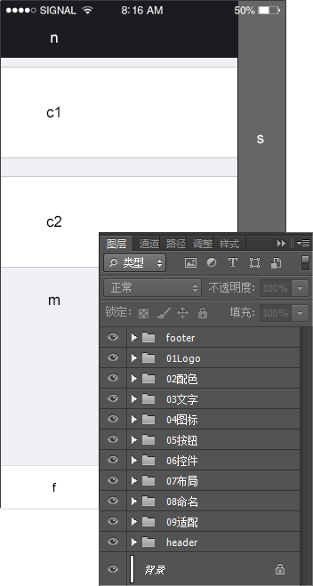

文件命名规范化
页面_框架_模块_控件_功能_状态.pdf 例 home_nav_btn_search_default.pdf 对应为首页_导航_按钮_搜索_默认.pdf，psd源文件也需要按照按此结构命名。
| 首页 | |
| 首页 home | 行情 markets |
| 资讯 news | 我/交易 me/trade |
| 自选 portfolio | |
| 框架 | |
| 导航 nav(n) | 主内容 main(m) |
| 菜单 footer(f) | 侧栏 sidebar(s) |
| 模块(c1、c2) | |
| 焦点图 banner | 列表 list |
| 提示 tips | 个人资料 profile |
| 首页九宫格 home_menu | |
| 控件 | |
| 按钮 btn | 背景 bg |
| 图片 img | 文本框 text |
| 弹窗 pop | 多选 select |
| 单选 radio | 图标 icon |
| 功能 | |
| 刷新 refresh | 添加 add |
| 删除 del | 编辑 edit |
| 返回 back | |
| 状态 | |
| 默认 default | 按下 pressed |
| 不可点 disabled | 选中 selected |